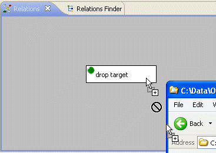
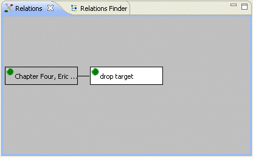
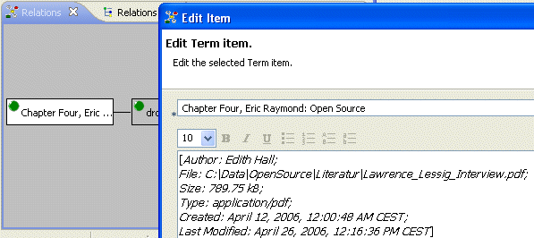
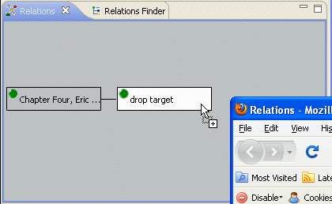
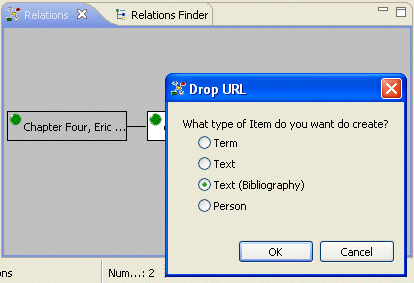
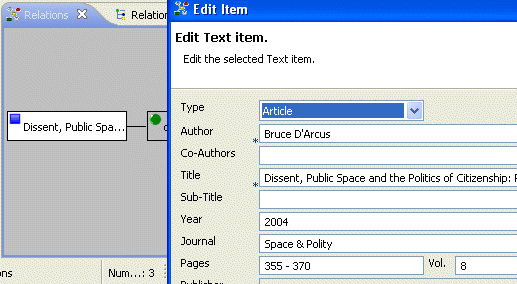

The application's drag and drop capability gives you the possibility to easily create items without the need to enter all information by hand. You can either drop file from your computer's file system or web pages from your web browser. Thus, the Relations application becomes a client for the semantic web.
Drag a file from your computer's file system and drop in on an item displayed in the Relations browser.
|  | > |  |
This will create a term item that is related to your drop target.

The application tries to extract as many metadata as possible and provides this information in the item's text part.
You can drag a web page from your browser window and drop it on any item displayed in the Relations browser.
|  | > |  |
This time you will be asked what type of item you'd like to create with the metadata extracted from the dropped web page. By default you get the choice to create a Term, Text or Person item.
If you select Text, the application will create a text item of type 'Web-Page'. Thus, the extracted information is about the web page you dropped. However, if the web page contains bibliographical metadata and if the application knows how to extract this information, you'll get the additional choice to create a Text (Bibliography) item. In this case, the extracted information and the created item is about the bibliographical item contained in the web page you dropped.

The text item created from the bibliographical information contained in the dropped web page.
Note 1: The Relations application can extract bibliographical information formatted in the COinS, unAPI or RDFa format.
Note 2: The drag and drop capability with web pages gives you the possibility to build up a bibliographical database using Relations without the need to enter every bibliography by hand. You just surfe the internet for the requested book or article and drop the web page you found to an itme on your Relations browser. Unfortunatley, the Relations application is not able to extract bibliographical information from the Amazon online catalog. However, you can use WorldCat (The World's Largest Library Catalog: www.worldcat.org) to look for bibliographies you can drop on your Relations browser.